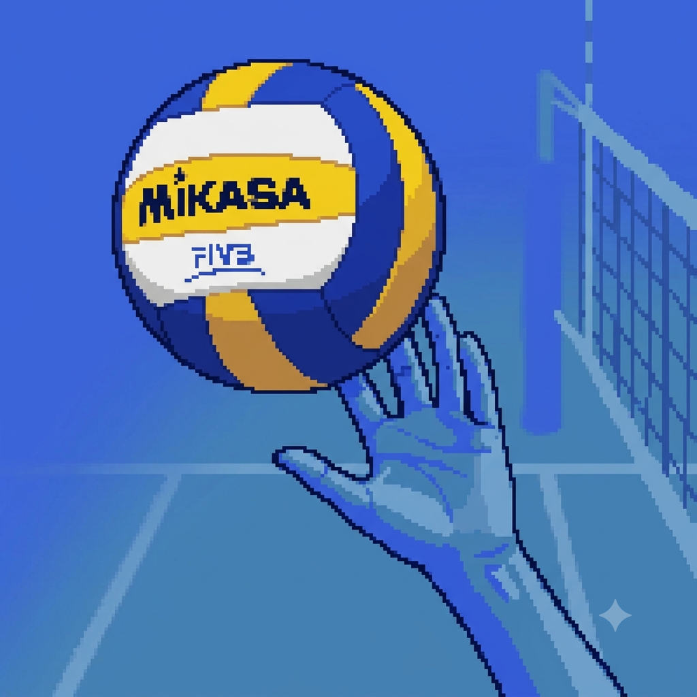

Bem-vindos todos! Sou a Nicky e vou mostrar a vocês meu mundo
Por: Nicolly Municky Traigel da Silva
Oi oi! Sejam muito bem-vindos ao meu espaço!
Fala, galera! Sejam muito bem-vindos ao meu mundo! Muitos me chamam de Nicky, mas prefiro o apelido Nay, mas enfim, vou contar sobre como eu comecei no vôlei e como venho me desempenhando até hoje! Tudo começou no 7º ano, eu não era tão viciada no vôlei como sou hoje em dia. Não tinha muitos fundamentos e fazia manchete com o peito basicamente, quando me mudei minha cidade de hoje em dia, foi no ano seguinte e então no 8° ano do fundamental, no meio do ano basicamente comecei a fazer aulas/treinos de vôlei e fui aprimorando isso no nono ano, hoje em dia ainda faço vôlei nas segundas, terças e quartas feiras, a tarde e às vezes a noite. É um hobby que eu adoro independente dos machucados que me causo pela minha posição de líbero. Obrigada por ler e espero que em algum dia possa ver sua evolução em algo que goste também.